Mauricio B. Almeida
Fotos de Buffalo, New York, US, veja meu Moleskine
Um continuante mantêm a identidade ao longo do tempo à despeito das mudanças qualitativas
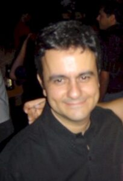
2000
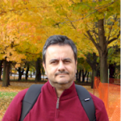
2010
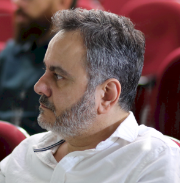
2020
Dr. Mauricio e Dr. Nicola Guarino (DOLCE Ontology)
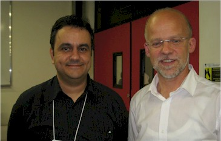
Dr. Mauricio e Dr. Nicola Guarino
Niagara Falls, 10 minutos da University at Buffalo, South Campus, US
Oxford University, UK
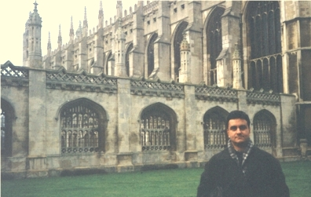
Dr. Mauricio e Dr. Barry Smith (Basic Formal Ontology)
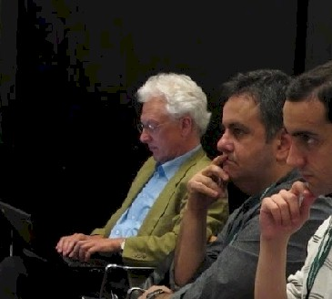
Dr. Mauricio e Dr. Barry Smith
Dr. Mauricio e Dr. Lee Giles (Citeseer)
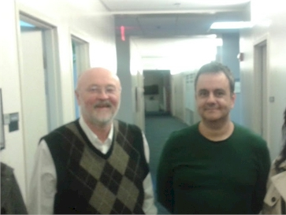
Dr. Mauricio e Dr. Lee Giles
Comentário sobre artigo “Revisiting Ontologies: a Necessary Clarification” em blog científico chinês
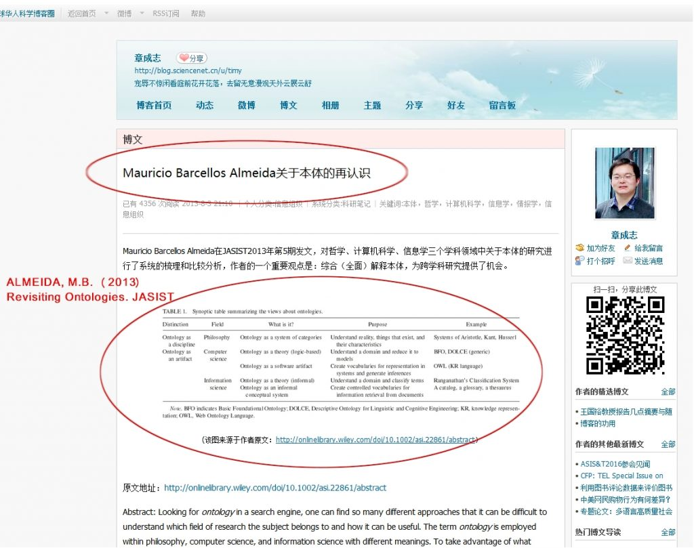
Palestra sobre interoperabilidade entre sistemas de informação biomédicos em Portugal
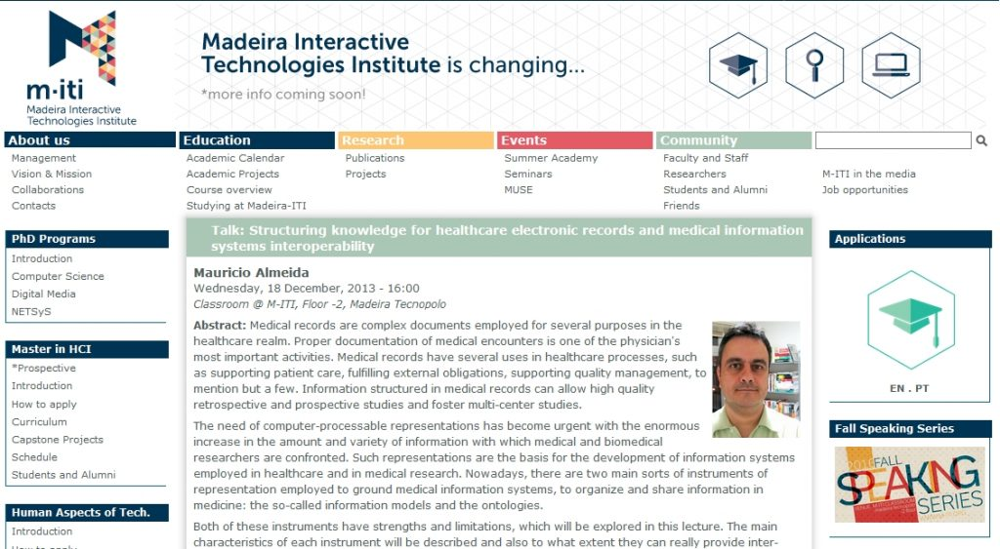
Palestra em Portugal
Comentário artigo “Revisting Ontological Foundations …” no blog da OpenEHR Foundation
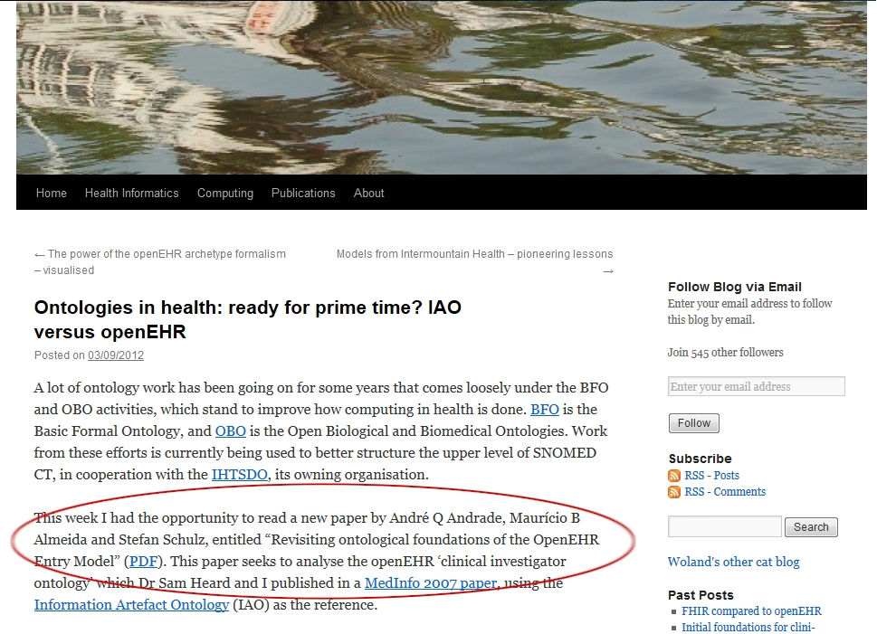
Membro da Ontology, Logic & Technology Unit, University at Buffalo
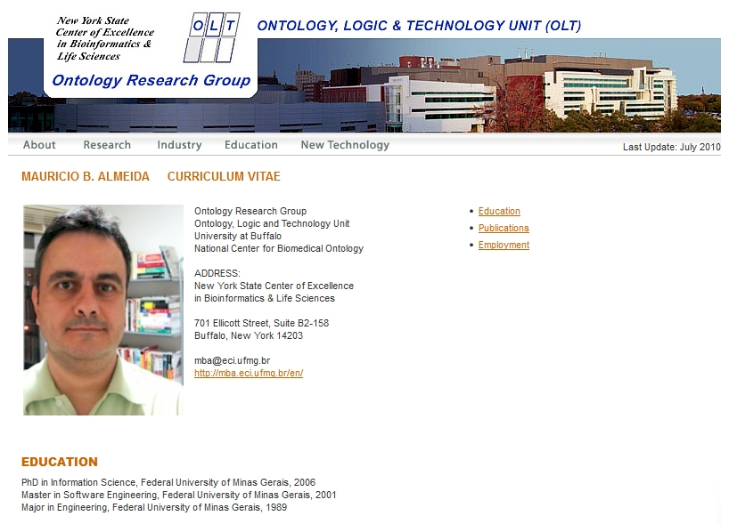
Com Dr. Doug Oard da University of Maryland, US
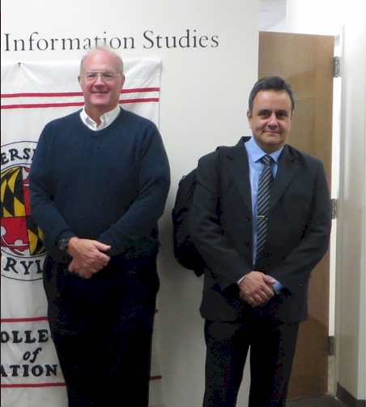
Dr. Mauricio e Dr. Doug Oard
Com Dra. Beatriz Cendón em reunião com professores da School of Information Studies at Syracuse University, US
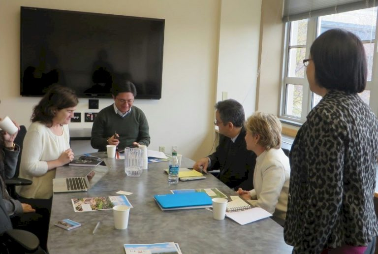
Na University of Florida com o Ontology Research Group
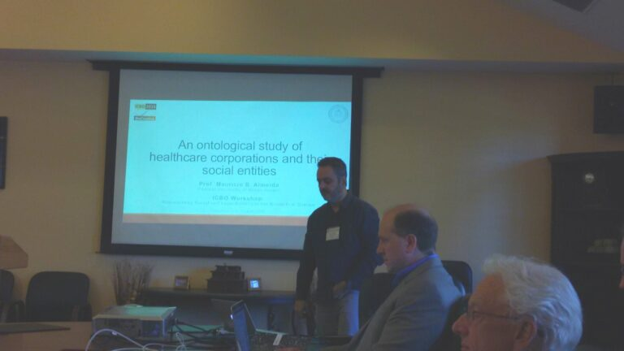
Na State University of Oregon
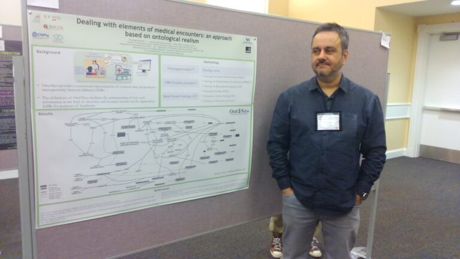
Com a Dra. Maria das Graças Simões, Universidade de Coimbra, Portugal
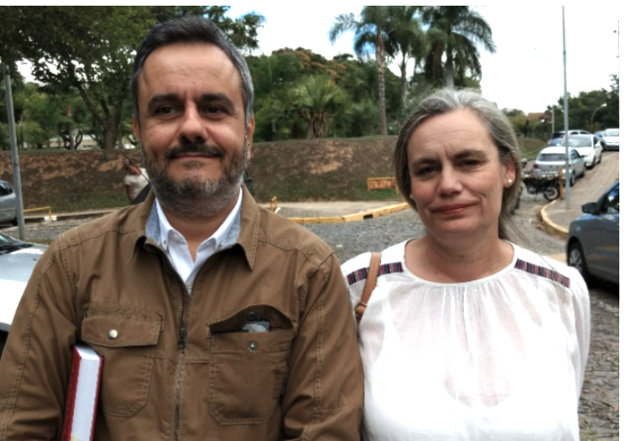
Dr. Mauricio e Dra. Maria das Graças Simões
Na University of Arkansas for Medical Science, US
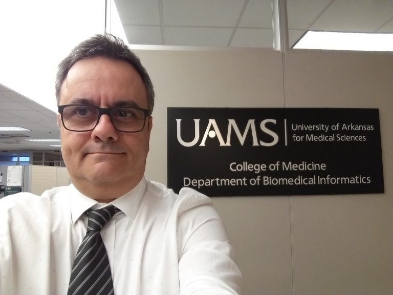
Com colegas do grupo RECOL
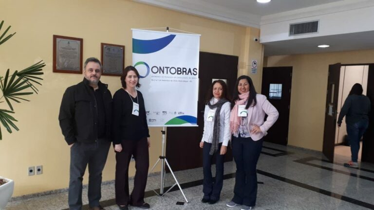
Na Universidade Federal Fluminense, BR
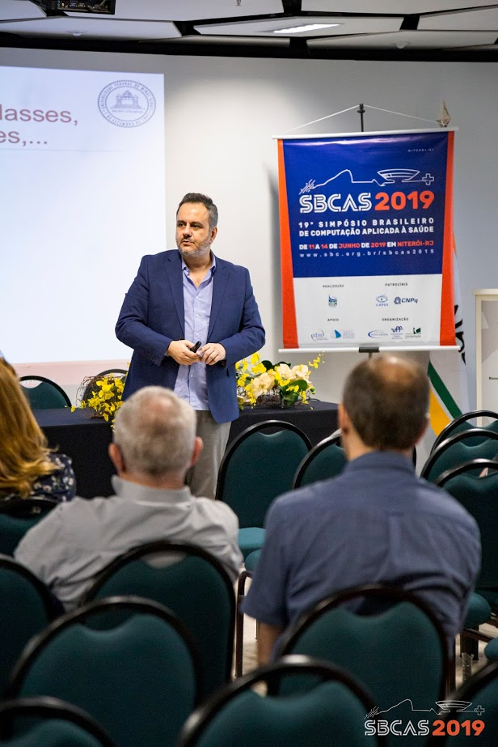
No QQML, Florence, Italy
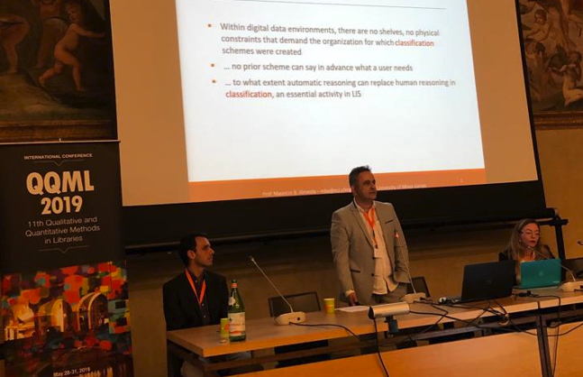
No ICBO, Brasília, Brasil
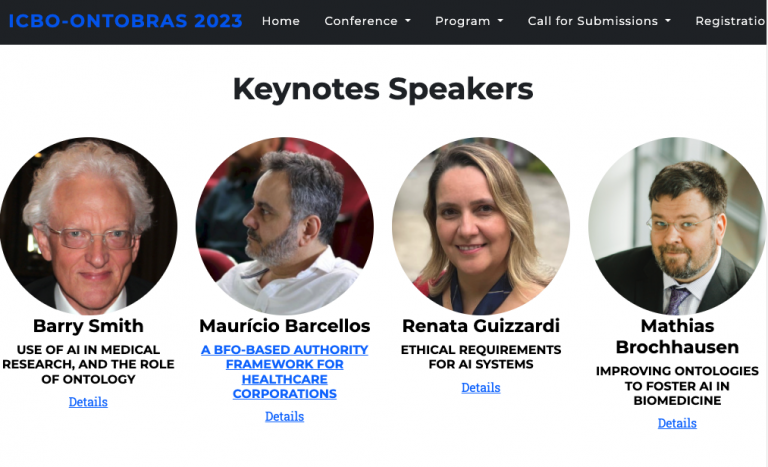
Relatório da OTAN citando publicação da qual participo
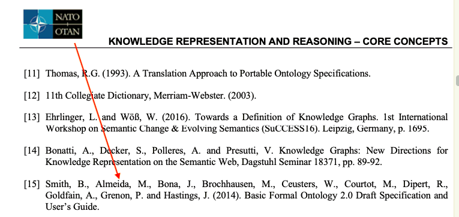
Especialista convidado, programa EDUCA e-SUS APS
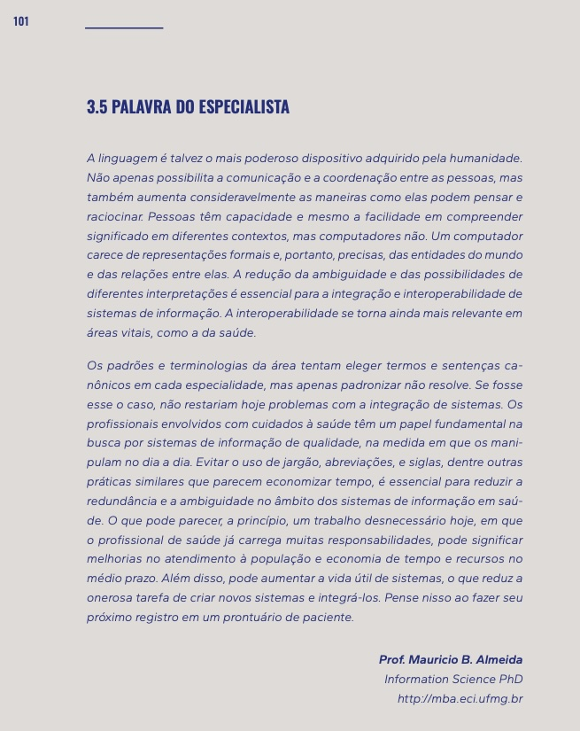
In: REIS, Z.S.N. (2024). REGISTRO DE SAÚDE NA APS: educação permanente para enfermeiros, médicos da equipe de saúde da família, cirurgiões-dentistas e equipes multiprofissionais. Disponível na Internet em: https://pesquisa.bvsalud.org/portal/resource/pt/biblio-1526821 Acesso em 07/02/2024
Livros da Colecão Representação do Conhecimento em Ciência da Informação na Biblioteca do IBTIC
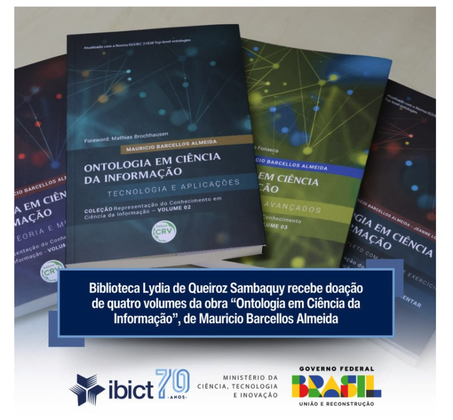
Professor Residente do Instituto de Estudos Avançados Interdisciplinares (IEAT) da UFMG
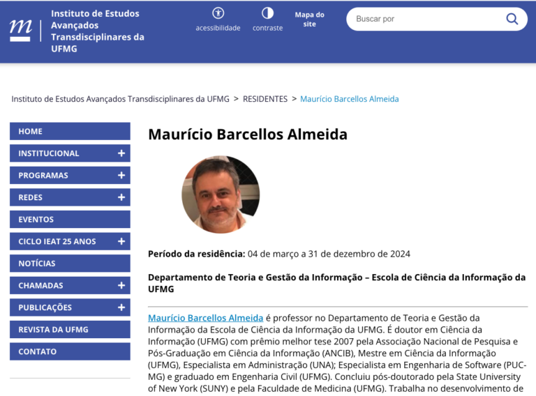